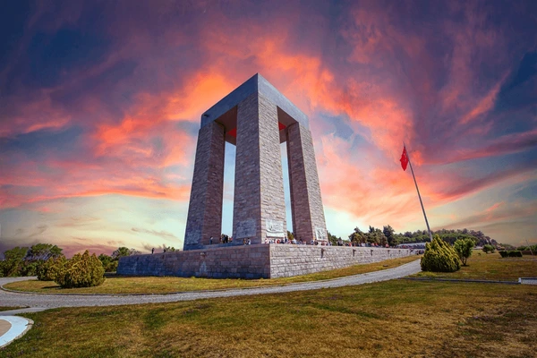
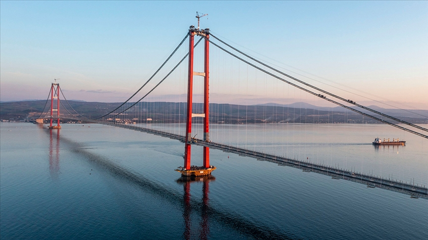
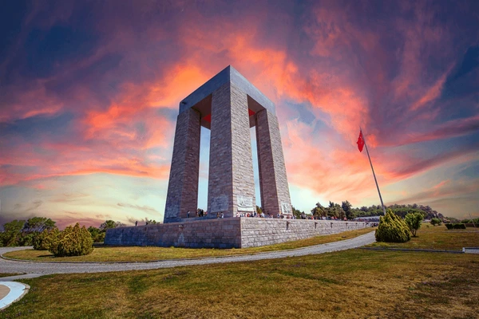
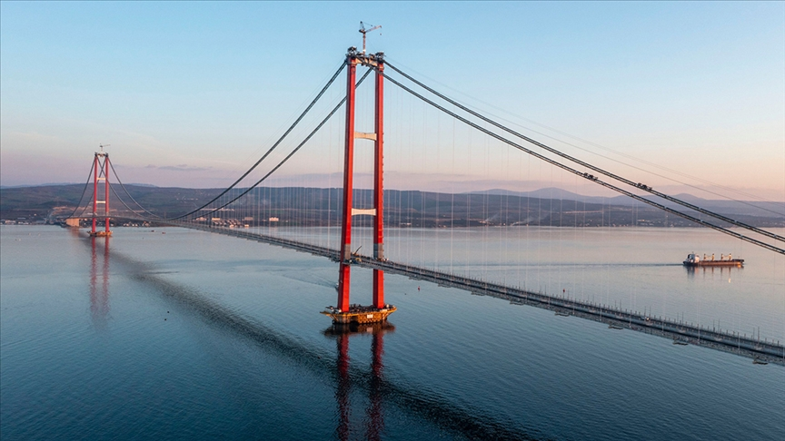

Çanakkale Hakkında
Çanakkale, tarihi Çanakkale Savaşları ve Troya Antik Kenti ile ünlüdür. Hem tarih hem de doğal güzellikleriyle ziyaretçilerini kendine çeker.
Ziyaret Edilmesi Gereken Yerler:
- Troya Antik Kenti: Homeros'un ünlü İlyada Destanı'na ilham kaynağı olan antik kent, UNESCO Dünya Mirası Listesi'nde yer almaktadır.
- Çanakkale Şehitliği: Çanakkale Savaşları'nda hayatını kaybeden Türk askerlerinin anısına yapılmış anıtlardır.
- Assos: Antik Yunan kenti, etkileyici manzarası ve Athena Tapınağı ile ünlüdür.